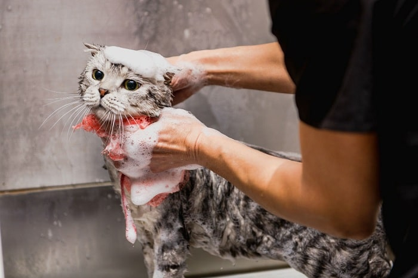
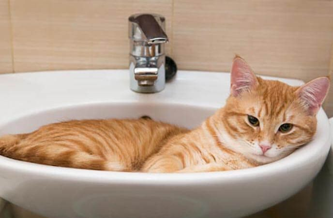
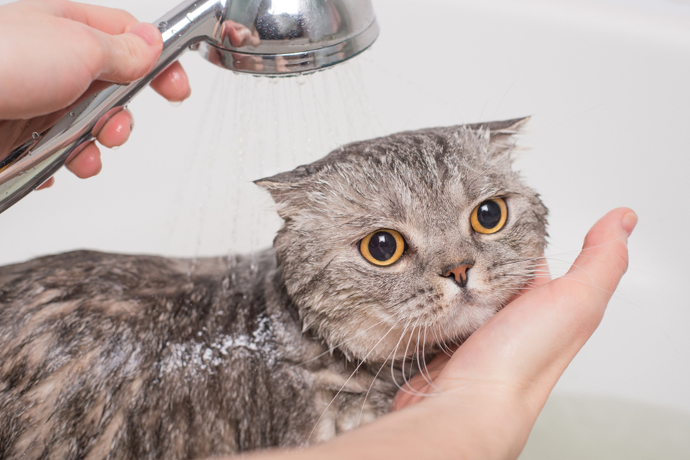
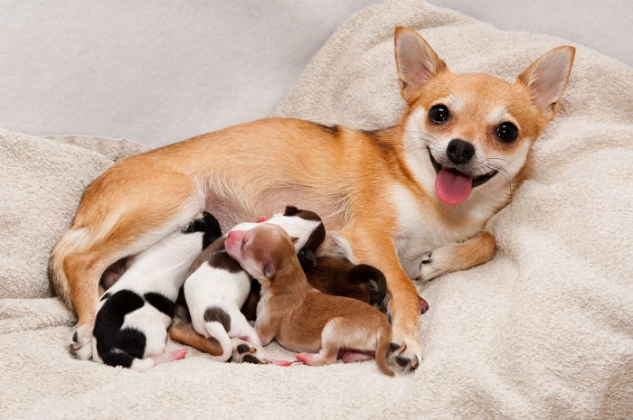

Như các sen đã biết, mèo có tập tính vô cùng sạch sẽ, vì vậy nên việc tắm cho mèo khi mang thai là cần thiết và chúng ta cần đặc biệt cẩn thận. Vì khi ta tắm không chỉ cho một mình mèo mẹ mà còn cho các bé mèo trong bụng. Vậy tắm cho mèo mang thai tại nhà như thế nào? Hãy cùng MARPET tìm hiểu kĩ hơn nhé!

Duy trì nhiệt độ
Các sen phải duy trì nhiệt độ nước trong suốt quá trình tắm, nhiệt độ lí tưởng nhất là khoảng từ 37 đến 39 độ. Đặc biệt là nên tắm cho mèo ở nơi kín gió, ấm áp để tránh mèo bị cảm lạnh.

Thời gian tắm
Tắm cho mèo bầu chỉ nên thực hiện một lần duy nhất trong thời kì mang thai hoặc thậm chí không tắm cũng được. Hãy chờ bé sinh xong khỏe mạnh, cơ thể phục hồi.
Nếu bé quá bẩn, chỉ nên tắm cho bé trong thời gian 10 – 15 phút. Đừng tắm quá lâu vì cơ thể mèo bầu dễ cảm lạnh.

Dù có bao nhiêu cách tắm cho mèo mang thai thì chung quy sự an toàn của mèo mẹ lẫn mèo con đều cần phải được cân nhắc. Vì bạn và mèo cưng còn rất nhiều thời gian phía trước. Hãy tắm cho bé khi bé đã sẵn sàng.
Một số lưu ý khi tắm cho mèo đang mang bầu
Ngoài ra bạn có thể bổ sung một số sản phẩm hỗ trợ làm sạch tai, răng, miệng để giúp mèo luôn sạch sẽ.
Cơ thể mèo trong giai đoạn này vô cùng nhạy cảm và cần được quan tâm nhiều hơn. Việc tắm của mèo cũng rất quan trọng, các sen nên lựa chọn loại sữa tắm và kết hợp gel dinh dưỡng để nâng cao sức khỏe của mèo mẹ và con. Hi vọng bài viết của PetCity sẽ giúp ích cho bạn, chúc mèo nhà bạn mẹ tròn con vuông nhé.
Vì thế, bạn hãy chú ý cung cấp đủ nước và thức ăn cho chúng nhé. Nên chọn những loại thức ăn mềm để dễ nhai và dễ tiêu hoá hơn. Đồng thời tiếp tục bổ sung gel dinh dưỡng hoặc canxi, sắt cho cún để tăng sức khoẻ.

Giai đoạn mang bầu của cún là giai đoạn rất quan trọng, ảnh hưởng trực tiếp tới sức khỏe cũng như sự phát triển của cún con nên chúng ta cần phải lưu tâm, chú trọng vào dinh dưỡng cũng như cách chăm sóc cún nhé. Hi vọng qua bài viết này sẽ hưu ích, giúp các bé cún "mẹ tròn con vuông".